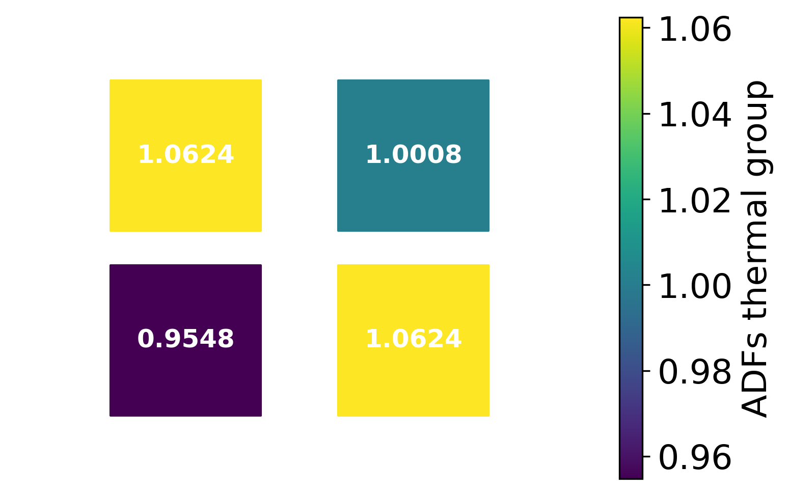

Iterative procedure with DYN3D¶
This Notebook demonestrates how to calculate correction factors (i.e.,
axial ADFs in this case) using the built-in JFNK procedure within the
xsInterface package.
First, cross sections are read from a serpent _res.m file. This
notebook shows how to execute DYN3D iteratively using the Iterate
method.
It is important to note that the solution presented here was validated against a consistent semi-analytic solution (not presented here).
Case Description¶
The .\inputs directory includes: - nuScale_00_xsgen2g_res.m a
serpent results file with all the cross sections. - univs a file
that describes how to read nuScale_00_xsgen2g_res.m -
template_dyn3d_2g_fuel is a template file that specifies how cross
sections should be printed out for the fuel and
template_dyn3d_2g_refl for the reflector. - controlDict the main
files that is required by the xsInterface.
The .\dyn3d includes a pre-generated DYN3D case. The .\dyn3d\xs
directory will include all the files with printed cross sections
required by DYN3D.
Required imports¶
from xsInterface.functions.main import Main
# a class required to execute DYN3D
from xsInterface.functions.dyn3d import DYN3D
inputFile = ".\\inputs\\controlDict"
Read the cross sections¶
# Reset the main object
xs = Main(inputFile)
... Reading control dict ... <.inputscontrolDict>
Read xs data without populating the templates¶
# readTemplate allows to read and populate data using the templates
xs.Read(readUniverses=True)
... Reading universe <u> ...
... Reading coe/_res.m file for hisotry <nom> ...
Populate cross sections¶
In the ".\\inputs\\controlDict" the user defined the core map used
to populate the cross sections according to their channels and layers
positions.
In our problem we have 1 channel and 38 axial layers.
Define states These states must exist and be used to obtain the cross sections for different channels and layers.
nchs = 4
nlayers = 1
states = {
'history':[['nom']*nlayers]*nchs,
'time': [[0.0]*nlayers]*nchs,
'dens': [[700.]*nlayers]*nchs,}
Populate core data built-in capability to populate the data
according to the defined map including defining new variables not listed
in the original univs file. This is a mandaory step if the
intent is to execute DYN3D.
volmanip = {'infflx': 'divide'}
xs.PopulateCoreData(
states=states,
attributes=None, # specify only if specific attrs needed
volManip=volmanip,
adf=None, bottomadf=None, topadf=None, sph=None,)
Iteratively execute DYN3D¶
casedir = ".\\dyn3d" # dyn3d dir
casefile = "2x2PWR2g" # name of dyn3d file
exefile = "RUN_DYN3D" # dyn3d executuin file
# Reset the object
reslt = DYN3D(xs, casedir, casefile, exefile)
Set the refernce flux
refFlx = xs.core.corevalues['infflx']
Execute
The files will be written to the specified directories and then automatically executed.
reslt.Iterate(
corrattrs=['adf'], refFlx=refFlx, newtonIters=7,
dampingF=0.8, lbound=0.9, ubound=1.1, pert=1E-03)
... Iterative JFNK ...
Newton #0/7
Arnoldi # 1 2 3 4 5
Newton #1/7
Arnoldi # 1 2 3 4 5
Newton #2/7
Arnoldi # 1 2 3 4 5
Newton #3/7
Arnoldi # 1 2 3 4
Newton #4/7
Arnoldi # 1 2 3 4 5
Newton #5/7
Arnoldi # 1 2 3 4
Newton #6/7
Arnoldi # 1 2 3 4
Compare results against Serpent¶
Plot the results for flux and its corresponding difference. Finally, plot the convergence as a function of newton iteration number.
import numpy as np
reslt.PlotFluxes([0], iters=np.array([0, 2, 4, 6]), markers=['<', '*', 'o'], chId="RR4")
Plot the reference fluxes in the Fast group and Thermal group respectively
xs.SlicePlot(reslt.refFlx, layer=0, markersize=5000, spacesize=2.0,
textsize=12, textcolor='w', textweight="bold",
precision=".4f", edge=1.5, norm=1.0, label="Normalized fast flux",
egroup=0)
xs.SlicePlot(reslt.refFlx, layer=0, markersize=5000, spacesize=2.0,
textsize=12, textcolor='w', textweight="bold",
precision=".4f", edge=1.5, norm=1.0, label="Normalized thermal flux",
egroup=1)
Plot the flux differences in the Fast group and Thermal group respectively Without iterating on ADFs.
xs.SlicePlot(reslt.iterDifferences[0], layer=0, markersize=5000, spacesize=2.0,
textsize=12, textcolor='w', textweight="bold",
precision=".2f", edge=1.5, norm=1.0, label="Percent difference in fast flux",
egroup=0)
xs.SlicePlot(reslt.iterDifferences[0], layer=0, markersize=5000, spacesize=2.0,
textsize=12, textcolor='w', textweight="bold",
precision=".2f", edge=1.5, norm=1.0, label="Percent difference in thermal flux",
egroup=1)
Plot the flux differences in the Fast group and Thermal group respectively After iterating on ADFs.
xs.SlicePlot(reslt.iterDifferences[-1], layer=0, markersize=5000, spacesize=2.0,
textsize=12, textcolor='w', textweight="bold",
precision=".2f", edge=1.5, norm=1.0, label="Percent difference in fast flux",
egroup=0)
xs.SlicePlot(reslt.iterDifferences[-1], layer=0, markersize=5000, spacesize=2.0,
textsize=12, textcolor='w', textweight="bold",
precision=".2f", edge=1.5, norm=1.0, label="Percent difference in thermal flux",
egroup=1)
Plot the resulting ADFs in the Fast group and Thermal group respectively
xs.SlicePlot(reslt.iterInputs['adf'][-1], layer=0, markersize=5000, spacesize=2.0,
textsize=12, textcolor='w', textweight="bold",
precision=".4f", edge=1.5, norm=1.0, label="ADFs fast group",
egroup=0)
xs.SlicePlot(reslt.iterInputs['adf'][-1], layer=0, markersize=5000, spacesize=2.0,
textsize=12, textcolor='w', textweight="bold",
precision=".4f", edge=1.5, norm=1.0, label="ADFs thermal group",
egroup=1)